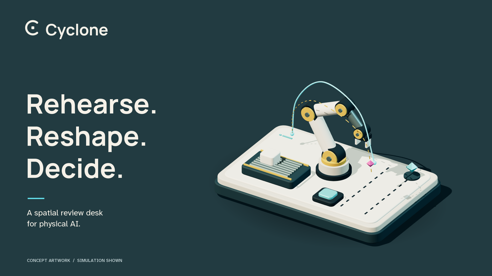

01 · Stillpoint
Recommended. Simplest small-size silhouette.
PRODUCT IDENTITY / SPATIAL UX / V1.0
A precise, tactile design language for the moment a person decides what an agent may do.

Make the proposed change and its rehearsal the clearest things on the desk.
Use a deliberate gesture, a visible state, and a way to stop.
Separate what was rehearsed, decided, verified and actually done.
01 / IDENTITY
The open C frames the review. The quiet square represents the decision that stays with you. The mark remains static in the interface.
Soft geometry. Clear intention.
Recommended identity: calm enough for repeated use, distinct at small sizes, and free of a literal storm or surveillance-eye motif.
Recommended. Simplest small-size silhouette.
A more architectural, industrial alternative.
More motion; less quiet at small sizes.
The brand mark identifies Cyclone. Each decision keeps its own hash-derived glyph; the logo must never replace that evidence.
02 / COLOUR SYSTEM
Use neutrals for structure. Reserve the expressive colours for rehearsal, attention and limits. Every status also has a word and a shape.
Select a swatch to copy its colour value.
Porcelain for the guide and flat companion screens. Ink for opaque panels in mixed reality. High contrast for explicit white boundaries and stronger cues.
Cyan means a rehearsal or active control, not “safe.” Amber asks for review. Orange increases attention. Magenta marks a limit or refusal. A verified signature has its own explicit label.
Text and semantic colours pass 4.5:1; control boundaries pass 3:1 against their specified opaque surfaces. Headset legibility still requires device testing.
Inspect contrast results ↗03 / TYPOGRAPHY
Manrope gives the identity its soft precision. Atkinson Hyperlegible Next keeps instructions, units and ambiguous characters distinguishable.
MANROPE / DISPLAY / 600–700
See what
changes.
Headlines, wordmark and section titles. Tight, never compressed.
ATKINSON HYPERLEGIBLE NEXT / UI / 400–700
250°/s
→ 180°/s
Il1 O0 5S 8B
Persistent units. Tabular numbers. Sentence case.
| Role | Web | XR em size | Use |
|---|---|---|---|
| Display | 64 px / 1.08 | Outside the task UI | Cover and brand expression |
| Panel title | 32 px / 1.2 | 1.5 cm | Short task and asset name |
| Decision value | 40 px / 1.15 | 1.8 cm | Value plus unit |
| Body / instruction | 18 px / 1.5 | 0.9 cm / 1.35 | One action per sentence |
| Label / supporting | 16 / 14 px | 1.0 / 0.75 cm | Never hide the unit or error |
XR sizes are proposed em heights at a 55 cm viewing distance, not measured letter heights. The 0.9 cm body em subtends about 0.94°. Validate x-height, field of view and 125% text scaling on the headset. Both font families and their OFL licences are included.
04 / WORKING CONTROL SPECIMEN
Try editing the speed, switching the theme and holding the practice control. Everything here is a local design demonstration.
Shorten the transfer cycle. Check the sweep beside the walkway.
Walkway crossed
0–300°/s · increments of 5. The clear example is 180°/s.
Use a multiple of 5 between 0 and 300°/s.
The agent proposes a faster transfer cycle. Inspect the sweep near the walkway, then rehearse any amendment before deciding. The one-handed equivalent preserves deliberate confirmation.
Solid and dashed paths remain distinguishable without colour.
Practice the commitment
Hold for 1.5 seconds. Release early to cancel.
Pointer, Space or Enter. No machine is connected.
SELECTION / ONE CHOICE
Hands-first interaction. Controllers are optional.
This selects a design example; it does not change input hardware.
PREFERENCES / IMMEDIATE FEEDBACK
High contrast and text size must not move a control outside reach.
BOUNDED FORM / PROPOSED FEATURE
One asset. A narrow range. An expiry you can see.
Implementation contract: all fields have visible labels, inline help, valid bounds, keyboard access and a persistent error. A loading action keeps its label and prevents duplicate submission.
05 / ACCESS & SPATIAL COMFORT
Access preferences change the interaction method. They never relax a policy requirement or convert a gaze into an approval.
Never call a pinch-dependent path “eyes-only.” Dwell may reveal details; it never commits a decision. Provide left/right hand preference.
Pair each risk level with a label, shape and pattern. Keep source, limits and units visible. Caption spatial audio at the associated asset.
Remove bloom, pulsing and recoil. Show explicit progress instead of movement. Tracking loss cancels the hold; restoring tracking never resumes it automatically.
Reflow at 125% text. Split settings into Input, Display and Session pages. Preserve large targets and move the panel inward when needed.
These are design starting points. Check real head positions, table edges, hand occlusion and narrow field of view on device. Web pixels must never be pasted into centimetre-based panels.
06 / IMPLEMENTATION HANDOFF
Start with the settings sizing fix and the shared tokens. Keep decision behaviour intact while applying the visual language.
Adopt the palette and type roles. Resolve component minimum widths. Assert computed panel and control bounds after mounting.
Show asset, change, consequence and next gesture. Keep full rationale behind a labelled detail control.
Use “rehearsal clear,” “decision recorded,” “signature checked” and “execution confirmed” only for their own evidence.
Test both hands, one hand, gaze + pinch, tracking loss, text scaling, different tables and sustained frame timing.
This kit is a design proposal. Its controls are demonstrators; the Cyclone application has not been restyled or connected to these interactions.